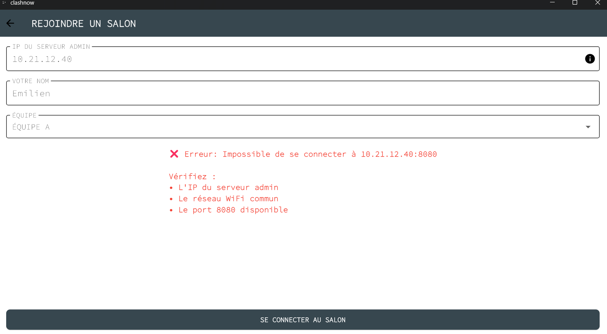
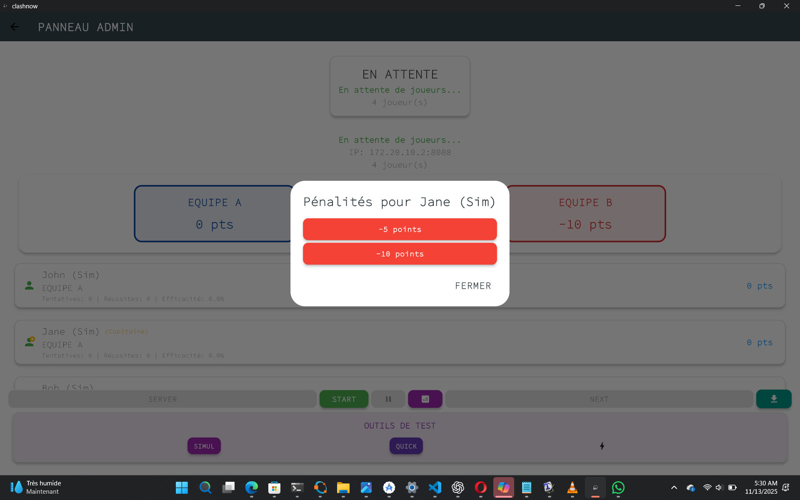

Introduction
Qu'est-ce que CLASHNOW ?
CLASHNOW est une application moderne qui remplace les buzzers physiques traditionnels pour les compétitions de génie en herbe. Elle permet aux clubs et écoles d'organiser des quiz interactifs en équipe avec un système de buzz numérique professionnel.
Pourquoi choisir CLASHNOW ?
💰 Économique
Plus besoin d'acheter du matériel coûteux. Utilisez simplement vos appareils existants.
📱 Flexible
Fonctionne sur Windows (admin) et Android (joueurs). Connexion via WiFi local.
📊 Complet
Statistiques détaillées, export CSV, gestion des capitaines, et bien plus.
⚡ Instantané
Buzz en temps réel avec affichage immédiat du premier joueur.
Public cible
- Clubs de génie en herbe
- Établissements scolaires
- Animateurs de quiz
- Organisateurs d'événements éducatifs
Architecture du système
Application Admin (Windows) : Crée le serveur et contrôle la partie
Applications Joueurs (Android) : Se connectent au serveur via IP
Communication : Réseau local WiFi sur le port 8080
📥 Installation
Prérequis système
Pour l'admin (animateur)
| Élément | Requis |
|---|---|
| Système d'exploitation | Windows 10 ou supérieur |
| Connexion réseau | WiFi ou Ethernet |
| Espace disque | 50 MB maximum |
Pour les joueurs
| Élément | Requis |
|---|---|
| Système d'exploitation | Android 8.0 ou supérieur |
| Connexion réseau | WiFi (même réseau que l'admin) |
| Espace disque | 50 MB maximum |
Installation sur Windows (Admin)

Action : Télécharger et extraire le fichier clashnow.zip
- Téléchargez le fichier ZIP depuis la source fournie
- Faites un clic droit sur le fichier et sélectionnez "Extraire tout..."
- Choisissez un emplacement (ex: Bureau ou Documents)
- Double-cliquez sur
clashnow.exepour lancer l'application
Exporter les résultats
Action : Cliquer sur le bouton "EXPORT" (icône 💾)
Résultat :
- Une fiche statistique est générée automatiquement
- Contient tous les scores et statistiques
- Disponible dans le presse-papier
- Idéal pour conserver un historique des parties
Résumé des boutons admin
| Bouton | Fonction | Quand l'utiliser |
|---|---|---|
| SERVER | Démarre le serveur | Au tout début, avant l'arrivée des joueurs |
| START | Lance la partie | Quand tous les joueurs sont connectés |
| PAUSE | Met en pause | Pour une interruption temporaire |
| NEXT | Question suivante | Après avoir attribué les points de la question actuelle |
| STATS 📊 | Affiche les statistiques | À tout moment pour voir le classement |
| EXPORT 💾 | Exporte les stats | En fin de partie ou pour sauvegarder |
📱 Guide Joueur
L'application joueur est simple et intuitive. Elle permet de se connecter au salon et de buzzer rapidement.
Lancer l'application

Action : Ouvrir l'application CLASHNOW sur votre appareil Android
Vous arrivez sur l'écran d'accueil avec deux options :
- CRÉER SALON : (Non utilisé côté joueur)
- REJOINDRE SALON : Cliquez ici pour vous connecter
Remplir le formulaire de connexion

Action : Entrer vos informations de connexion
Champs à remplir :
- IP DU SERVEUR ADMIN
- Entrez l'adresse IP affichée sur l'écran admin
- Exemple : 10.13.21.127 ou 172.20.10.5
- Ne pas inclure le :8080, seulement l'IP
- VOTRE NOM
- Choisissez un nom ou pseudo
- Ce nom apparaîtra à l'écran quand vous buzzez
- Exemple : Emilien, Alice, Bob, etc.
- ÉQUIPE
- Sélectionnez EQUIPE A ou EQUIPE B
- Utilisez le menu déroulant
Se connecter au salon

Action : Cliquer sur le bouton "SE CONNECTER AU SALON"
Connexion réussie :
- Message "Connecté !" s'affiche avec une coche verte ✓
- Vous êtes redirigé vers l'écran de buzzer
- Votre nom apparaît sur l'écran admin

Erreur de connexion :
Si un message d'erreur rouge apparaît :
- "Impossible de se connecter à [IP]:8080"
- Vérifiez l'IP du serveur admin (pas d'erreur de frappe)
- Vérifiez que vous êtes sur le même réseau WiFi
- Vérifiez que le serveur admin est bien démarré (bouton SERVER cliqué)
- Assurez-vous que le port 8080 n'est pas bloqué
Utiliser le buzzer


Interface de jeu :
L'écran affiche :
- Votre nom en haut
- Votre équipe (EQUIPE A ou B)
- Votre score personnel
- Le gros bouton buzzer au centre
- Message en bas : "APPUYEZ POUR BUZZER"
États du buzzer :
🔴 Buzzer actif (rouge) :
- Vous pouvez appuyer pour buzzer
- Le bouton est grand et rouge avec icône de son 🔊
- Message : "APPUYEZ POUR BUZZER"
🔒 Buzzer verrouillé (gris) :
- Vous ne pouvez pas buzzer
- Le bouton est gris avec icône de cadenas 🔒
- Message : "Buzz envoyé ! En attente du premier buzzer..."
- Apparaît après que vous ou votre équipe avez buzzé
Suivre votre score
Votre score personnel est affiché en temps réel en haut de l'écran.
Mise à jour du score :
- Après chaque buzz, l'admin attribue des points
- Votre score se met à jour automatiquement
- Les points peuvent être positifs (+10, +20, etc.) ou négatifs (-10)
Résumé de l'expérience joueur
1️⃣ Connexion
Entrez l'IP, votre nom et votre équipe, puis connectez-vous.
2️⃣ Attente
Attendez que l'admin démarre la partie. Votre buzzer sera alors actif.
3️⃣ Jeu
Écoutez les questions et buzzez le plus vite possible quand vous connaissez la réponse.
4️⃣ Scores
Suivez votre progression et tentez de devenir le top scorer !
⚡ Fonctionnalités Avancées
Système de capitaines

Les capitaines d'équipe ont une étoile ⭐ affichée à côté de leur nom.
Comment désigner un capitaine :
- Cliquez sur le nom d'un joueur dans la liste admin
- Un menu d'options apparaît
- Sélectionnez "Désigner comme capitaine"
- L'étoile ⭐ apparaît à côté de son nom
Système de points flexible
L'admin peut attribuer différents points selon la difficulté de la question :
| Points | Utilisation suggérée |
|---|---|
| +5 points | Bonus pour réponse partielle ou question bonus facile |
| +10 points | Question standard de difficulté normale |
| +20 points | Question de difficulté moyenne ou identification |
| +30 points | Question difficileou identification |
| +40 points | Question très difficile ou identification |
| -10 points | Pénalité pour mauvaise réponse ou mauvaise conduite de joueur |
Gestion du verrouillage stratégique


Le système de verrouillage permet une gestion équitable des buzz :
Scénario 1 : Réponse correcte
- Un joueur de l'EQUIPE A buzz
- Il donne la bonne réponse
- L'admin attribue les points (+10, +20, etc.)
- TOUS les buzzers se verrouillent
- L'admin clique sur NEXT pour la question suivante
Scénario 2 : Réponse incorrecte avec option PASSER
- Un joueur de l'EQUIPE A buzz
- Il donne une mauvaise réponse
- L'admin clique sur PASSER
- L'EQUIPE A est verrouillée (ne peut plus buzzer)
- L'EQUIPE B est déverrouillée (peut buzzer)
- Si l'EQUIPE B répond correctement, elle gagne les points
Scénario 3 : Pénalité immédiate
- Un joueur buzz avec une mauvaise réponse
- L'admin clique sur -10 POINTS
- Le joueur perd 10 points
- Son équipe perd également 10 points
- Tous les buzzers se verrouillent
Statistiques détaillées

Le panneau de statistiques offre une analyse complète de la partie :
Métriques individuelles :
- Tentatives : Nombre de fois où le joueur a buzzé
- Réussites : Nombre de bonnes réponses
- Efficacité : Pourcentage de réussite (Réussites / Tentatives × 100)
- Score : Points totaux accumulés
Métriques d'équipe :
- Score total de chaque équipe
- Nombre de tentatives par équipe
- Taux de réussite global par équipe
Outils de test
L'interface admin comprend des outils pour tester le système :
| Outil | Fonction |
|---|---|
| SIMUL | Simule un buzz aléatoire pour tester le système |
| QUICK | Test rapide de connexion et de réactivité |
🔧 Dépannage
Problèmes de connexion
Solutions :
- Vérifiez que le serveur admin est bien démarré (bouton SERVER cliqué)
- Vérifiez que l'IP entrée par les joueurs est correcte (pas d'espace, pas de :8080)
- Assurez-vous que tous les appareils sont sur le MÊME réseau WiFi
- Redémarrez le routeur WiFi si nécessaire
- Désactivez temporairement les pare-feu qui pourraient bloquer le port 8080
- Essayez de pinguer l'IP de l'admin depuis un appareil Android (avec une app de ping)
Solutions :
- Le point à côté de son nom devient rouge sur l'écran admin
- Demandez au joueur de vérifier sa connexion WiFi
- Le joueur peut se reconnecter avec les mêmes informations
- Son score sera préservé s'il utilise exactement le même nom et la même équipe
Solutions :
- Vérifiez que l'ordinateur est bien connecté au WiFi
- Redémarrez l'application CLASHNOW
- Trouvez manuellement l'IP avec la commande
ipconfigdans l'invite de commandes - Assurez-vous qu'aucun VPN n'est actif
Problèmes de buzz
Solutions :
- Vérifiez que la partie est démarrée (bouton START cliqué côté admin)
- Vérifiez que le buzzer n'est pas verrouillé (icône de cadenas)
- Si votre équipe a déjà buzzé, attendez que l'admin clique sur NEXT
- Vérifiez votre connexion internet (le point doit être vert côté admin)
- Réessayez d'appuyer fermement sur le bouton
Solutions :
- Problème de latence réseau : vérifiez la qualité du WiFi
- Rapprochez les appareils du routeur WiFi
- Fermez les applications qui consomment de la bande passante
- Redémarrez la connexion du joueur concerné
Problèmes d'affichage
Solutions :
- Vérifiez que vous avez bien cliqué sur un bouton de points dans le dialogue de buzz
- Rafraîchissez l'affichage en cliquant sur STATS puis FERMER
- Si le problème persiste, notez les scores manuellement et signalez le bug
Solutions :
- Fermez et relancez l'application
- Les joueurs devront se reconnecter
- Les scores en cours seront perdus (utilisez l'export régulièrement)
- Vérifiez que votre ordinateur a suffisamment de RAM disponible
Problèmes d'installation
Solutions :
- Cliquez sur "Informations complémentaires" dans la fenêtre Windows Defender
- Cliquez sur "Exécuter quand même"
- L'application est sûre, c'est une mesure de sécurité Windows standard
Solutions :
- Allez dans Paramètres → Sécurité
- Activez "Sources inconnues" ou "Installer des applications inconnues"
- Sur Android récent, vous devez autoriser l'installation pour l'application spécifique (Gestionnaire de fichiers, Chrome, etc.)
- Réessayez d'ouvrir le fichier APK
Conseils pour une partie réussie
- Testez la connexion avec 2-3 joueurs avant d'inviter tout le monde
- Assurez-vous que le WiFi est stable et que tous les appareils sont chargés
- Expliquez les règles aux participants
- Faites un tour de test avec une question facile
- Exportez les scores régulièrement (toutes les 10 questions) pour éviter la perte de données
- Surveillez les indicateurs de connexion (points verts/rouges)
- Rappelez aux joueurs de ne pas verrouiller leur téléphone
- Gardez l'écran admin visible pour tous (projecteur ou grand écran)
- N'oubliez pas d'exporter les résultats finaux
- Consultez les statistiques pour identifier les MVP
- Partagez le classement avec les participants
- Conservez les fichiers CSV pour l'historique
❓ Questions Fréquentes (FAQ)
Il n'y a pas de limite technique stricte, mais nous recommandons 4 à 12 joueurs pour une expérience optimale (2 à 6 par équipe). Au-delà, le réseau peut devenir instable selon votre routeur WiFi.